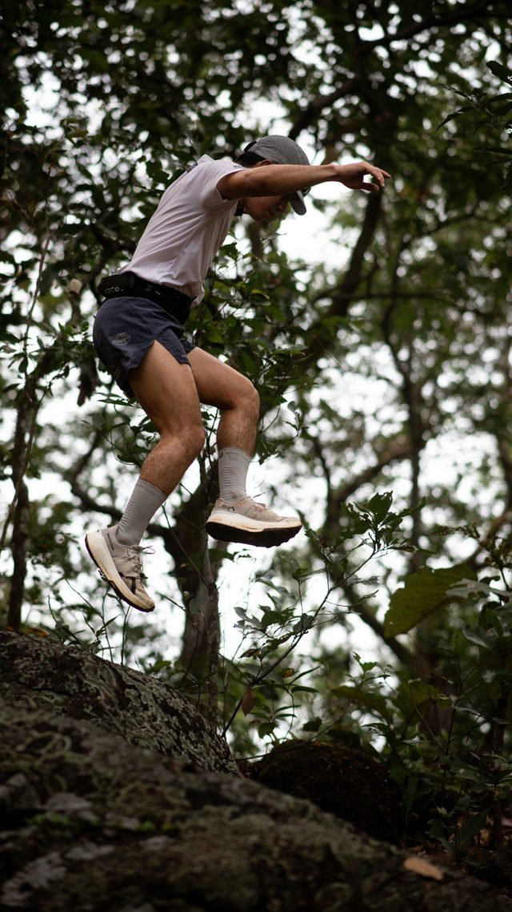

MOVE KIDS — 14K
Community Trail · ประมาณ 14 กม. · เข้าร่วมฟรี


Community Trail · ประมาณ 14 กม. · เข้าร่วมฟรี
17K · Run to Share · NORX × Lactasoy Original
Evening Run · Road · City Run
Coffee Run · Community Run
7K · Road · City Run · Free Entry · NORX w/ JONGDEE
36K · +2,126m · 10.47 hr · Training Run
38K · +1,200m · Trail · Free Entry
14K · +900m · Community Trail